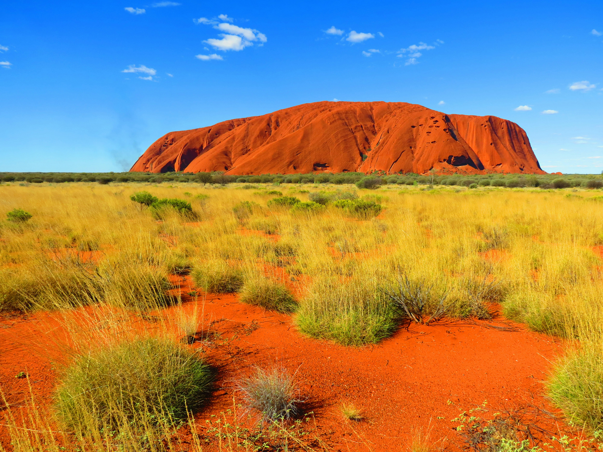
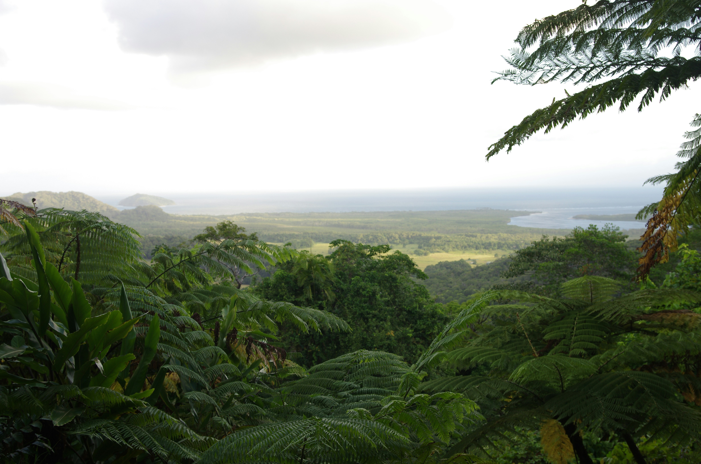
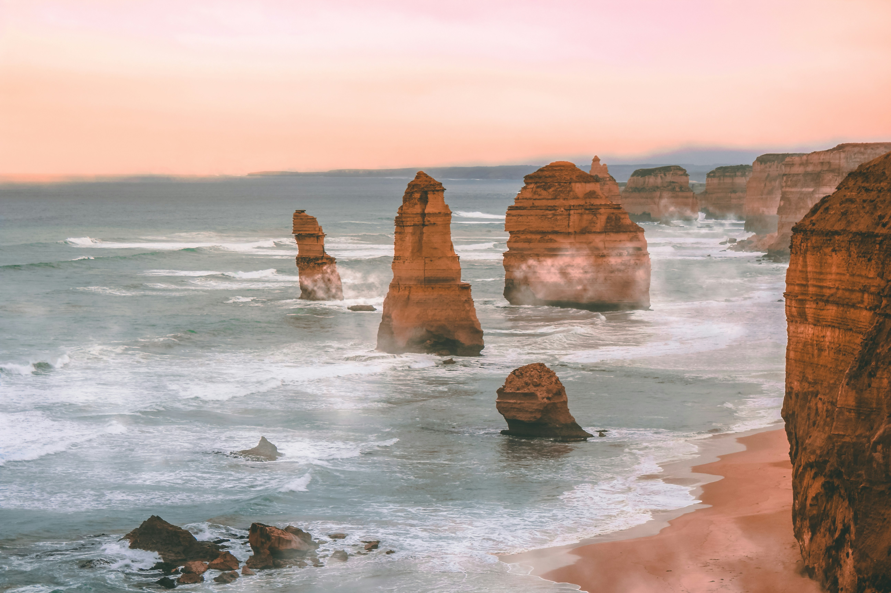

Uluru
Uluru, tidigare känd som Ayers Rock, är en massiv sandstensmonolit i hjärtat av den australiska outbacken och ett av världens mest kända naturunderverk. Denna majestätiska röda klippa är djupt helig för urbefolkningen, Anangu-folket, och bär på uråldriga berättelser från drömtiden. Att bevittna Uluru vid soluppgång eller solnedgång är en magisk upplevelse, när klippan verkar glöda och skifta i intensiva nyanser av rött, orange och lila. Ett besök här erbjuder en unik inblick i landets rika urfolkskultur och det karga, storslagna ökenlandskapets oändliga skönhet.

Stora Bariärrevet
Stora Barriärrevet är världens största korallrevssystem och ett av vår planets mest spektakulära naturfenomen så enormt att det till och med syns från rymden! Detta glittrande undervattensparadis utanför Queenslands kust är hem åt ett myllrande och färgsprakande marint liv. Att snorkla eller dyka här är som att sväva genom en magisk, levande tavla fylld av koraller, nyfikna havssköldpaddor och tusentals tropiska fiskar. Oavsett om du utforskar revet från en båt, en helikopter eller under vattenytan, är det en hisnande upplevelse som står högst upp på många resenärers önskelista.

Daintree-Regnskogen
Daintree-regnskogen i norra Queensland är världens äldsta kontinuerliga tropiska regnskog, med anor som sträcker sig otroliga 180 miljoner år tillbaka i tiden. Det är en grönskande värld fylld av sällsynta växter, uråldriga träd och ett unikt djurliv som inte finns någon annanstans på jorden. Här möter den lummiga djungeln havet på ett spektakulärt sätt vid Cape Tribulation, precis intill Stora Barriärrevet. Vandra på natursköna hängbroar genom trädkronorna, spana efter krokodiler längs Daintree River eller bara andas in luften i detta makalösa, levande världsarv.

12 Apostlarna
De 12 Apostlarna är en av de mest dramatiska och fotograferade sevärdheterna längs den legendariska kustvägen Great Ocean Road i Victoria. Dessa magnifika kalkstenspelare reser sig stolt ur det piskande och skummande Södra ishavet, skapade genom miljontals år av naturens kraftiga erosion. Att stå på utsiktsplatserna högt uppe på klippkanten och blicka ut över dessa majestätiska stenmonument är en otroligt mäktig upplevelse, särskilt i det magiska ljuset vid solnedgången. Den karga kusten och bruset från de dånande vågorna gör detta till ett absolut måste för alla naturälskare.